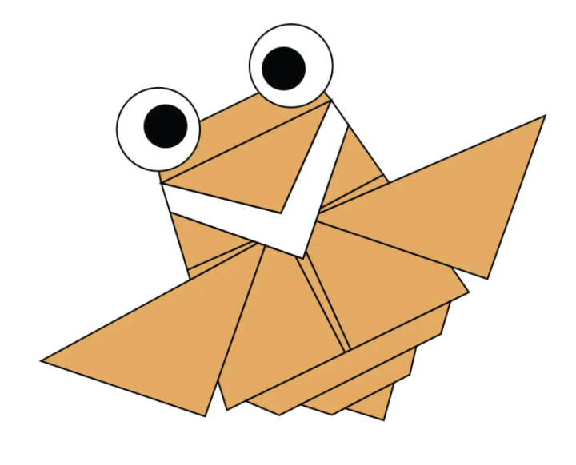

Origami Designs
About Us
Follow Us
Interesting facts about Camels!
- Camels can travel at up to 40 miles per hour – the same as a racehorse!
- Camels can completely shut their nostrils during sandstorms.
- Camels have thick lips which let them forage for thorny plants other animals can’t eat.
- Their humps let them store up to 80 pounds of fat which they can live off for weeks and even months!

Interesting facts about flying Cicadas!
-
They improve lawns by digging tunnels that allow air into the soil. When they die, their rotting bodies put nitrogen into the soil.
-
Their short adult life is not unusual for bugs. The adult stage for many insects is only for finding a mate or moving to a new location.
-
Most have red-orange eyes. But occasionally cicadas have blue, white or grayish eyes.
-
Females may be attracted to the sound of motors.
Interesting facts about Pandas!
-
Giant pandas (often referred to as simply “pandas”) are black and white bears. In the wild, they are found in thick bamboo forests, high up in the mountains of central China.
-
These magnificent mammals are omnivores. But whilst pandas will occasionally eat small animals and fish, bamboo counts for 99% of their diet.
-
The giant panda’s scientific name is Ailuropoda melanoleuca, which means “black and white cat-foot”.
-
Unlike most other bears, pandas do not hibernate. When winter approaches, they head lower down their mountain homes to warmer temperatures, where they continue to chomp away on bamboo!
Interesting facts about Chameleon!
-
The first chameleons evolved shortly after the extinction of dinosaurs 65 million years ago.
-
Classified as "old world" lizards because they're only indigenous to Africa and Eurasia.
-
Most chameleons can change their color, and pattern, by manipulating the pigments and crystals of guanine (a type of amino acid) embedded in their skin.
-
One of the most mysterious things about chameleons is their ability to see light in the ultraviolet spectrum.